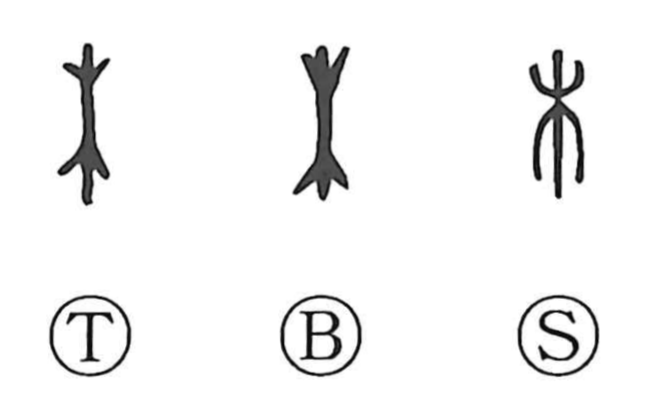

木

Kun: ki, ko | On: boku, moku
tree ・ wood
Explanation
This character is a straightforward pictograph of a tree: a vertical trunk with branches that lift upward above and hang downward below. From this clear image it takes the meaning “tree.” In use, 木 often denotes wood or timber as a material, whereas 樹 refers more specifically to a planted or standing tree.